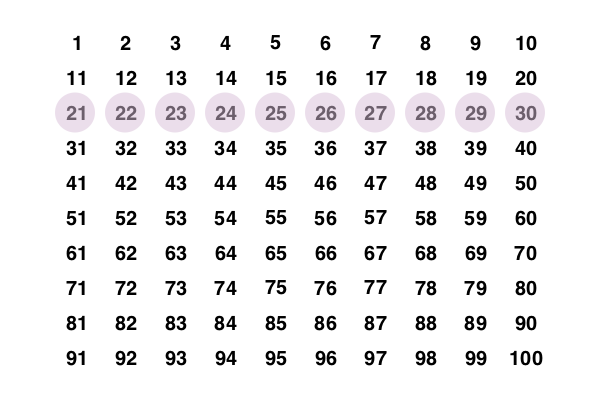

Tables and grids
You often want to position graphics at regular locations on the drawing. The positions can be provided by:
Tiler: a rectangular grid which you specify by enclosing area, and the number of rows and columnsPartition: a rectangular grid which you specify by enclosing area, and the width and height of each cellGridandGridHexa rectangular or hexagonal grid, on demandTable: a rectangular grid which you specify by providing row and column numbers, row heights and column widths
These are types which act as iterators. Their job is to provide you with centerpoints; you'll probably want to use these in combination with the cell's widths and heights.
Tiles and partitions
The drawing area (or any other area) can be divided into rectangular tiles (as rows and columns) using the Tiler and Partition iterators.
The Tiler iterator returns the center point and tile number of each tile in turn.
In this example, every third tile is divided up into subtiles and colored:
tiles = Tiler(800, 500, 4, 5, margin=5)
for (pos, n) in tiles
randomhue()
box(pos, tiles.tilewidth, tiles.tileheight, :fill)
if n % 3 == 0
gsave()
translate(pos)
subtiles = Tiler(tiles.tilewidth, tiles.tileheight, 4, 4, margin=5)
for (pos1, n1) in subtiles
randomhue()
box(pos1, subtiles.tilewidth, subtiles.tileheight, :fill)
end
grestore()
end
sethue("white")
textcentered(string(n), pos + Point(0, 5))
end
Partition is like Tiler, but you specify the width and height of the tiles, rather than how many rows and columns of tiles you want.
Luxor.Tiler — Typetiles = Tiler(areawidth, areaheight, nrows, ncols, margin=20)A Tiler is an iterator that, for each iteration, returns a tuple of:
the
x/ypoint of the center of each tile in a set of tiles that divide up a rectangular space such as a page into rows and columns (relative to current 0/0)the number of the tile
areawidth and areaheight are the dimensions of the area to be tiled, nrows/ncols are the number of rows and columns required, and margin is applied to all four edges of the area before the function calculates the tile sizes required.
Tiler and Partition are similar:
Partition lets you specify the width and height of a cell
Tiler lets you specify how many rows and columns of cells you want, and a margin:
tiles = Tiler(1000, 800, 4, 5, margin=20)
for (pos, n) in tiles
# the point pos is the center of the tile
endYou can access the calculated tile width and height like this:
tiles = Tiler(1000, 800, 4, 5, margin=20)
for (pos, n) in tiles
ellipse(pos.x, pos.y, tiles.tilewidth, tiles.tileheight, :fill)
endIt's sometimes useful to know which row and column you're currently on. tiles.currentrow and tiles.currentcol should have that information for you.
To use a Tiler to make grid points:
first.(collect(Tiler(800, 800, 4, 4))which returns an array of points that are the center points of the grid.
Luxor.Partition — Typep = Partition(areawidth, areaheight, tilewidth, tileheight)A Partition is an iterator that, for each iteration, returns a tuple of:
- the
x/ypoint of the center of each tile in a set of tiles that divide up a
rectangular space such as a page into rows and columns (relative to current 0/0)
- the number of the tile
areawidth and areaheight are the dimensions of the area to be tiled, tilewidth/tileheight are the dimensions of the tiles.
Tiler and Partition are similar:
Partition lets you specify the width and height of a cell
Tiler lets you specify how many rows and columns of cells you want, and a margin
tiles = Partition(1200, 1200, 30, 30)
for (pos, n) in tiles
# the point pos is the center of the tile
endYou can access the calculated tile width and height like this:
tiles = Partition(1200, 1200, 30, 30)
for (pos, n) in tiles
ellipse(pos.x, pos.y, tiles.tilewidth, tiles.tileheight, :fill)
endIt's sometimes useful to know which row and column you're currently on:
tiles.currentrow
tiles.currentcolshould have that information for you.
Unless the tilewidth and tileheight are exact multiples of the area width and height, you'll see a border at the right and bottom where the tiles won't fit.
You can obtain the centerpoints of all the tiles in one go with:
first.(collect(tiles))or obtain ranges with:
tiles[1:2:end]Tables
The Table iterator can be used to define tables: rectangular grids with a specific number of rows and columns.
Unlike a Tiler, the Table iterator lets you have columns can have different widths, and rows with different heights.
(Luxor generally tries to keep to the Julia convention of 'width' -> 'height', 'row' -> 'column'. This flavour of consistency can sometimes be confusing if you're expecting other kinds of consistency, such as 'x before y'...)
Tables don't store data, of course, but are designed to help you draw tabular data.
To create a simple table with 3 rows and 4 columns, using the default width and height (100):
julia> t = Table(3, 4);When you use this as an iterator, you can get the coordinates of the center of each cell, and its number:
julia> for i in t
println("row: $(t.currentrow), column: $(t.currentcol), center: $(i[1])")
end
row: 1, column: 1, center: Luxor.Point(-150.0, -100.0)
row: 1, column: 2, center: Luxor.Point(-50.0, -100.0)
row: 1, column: 3, center: Luxor.Point(50.0, -100.0)
row: 1, column: 4, center: Luxor.Point(150.0, -100.0)
row: 2, column: 1, center: Luxor.Point(-150.0, 0.0)
row: 2, column: 2, center: Luxor.Point(-50.0, 0.0)
row: 2, column: 3, center: Luxor.Point(50.0, 0.0)
row: 2, column: 4, center: Luxor.Point(150.0, 0.0)
row: 3, column: 1, center: Luxor.Point(-150.0, 100.0)
row: 3, column: 2, center: Luxor.Point(-50.0, 100.0)
row: 3, column: 3, center: Luxor.Point(50.0, 100.0)
row: 3, column: 4, center: Luxor.Point(150.0, 100.0)You can also access row and column information:
julia> for r in 1:size(t)[1]
for c in 1:size(t)[2]
@show t[r, c]
end
end
t[r, c] = Luxor.Point(-150.0, -100.0)
t[r, c] = Luxor.Point(-50.0, -100.0)
t[r, c] = Luxor.Point(50.0, -100.0)
t[r, c] = Luxor.Point(150.0, -100.0)
t[r, c] = Luxor.Point(-150.0, 0.0)
t[r, c] = Luxor.Point(-50.0, 0.0)
t[r, c] = Luxor.Point(50.0, 0.0)
t[r, c] = Luxor.Point(150.0, 0.0)
t[r, c] = Luxor.Point(-150.0, 100.0)
t[r, c] = Luxor.Point(-50.0, 100.0)
t[r, c] = Luxor.Point(50.0, 100.0)
t[r, c] = Luxor.Point(150.0, 100.0)The next example creates a table with 10 rows and 10 columns, where each cell is 50 units wide and 35 high.
sethue("black")
t = Table(10, 10, 50, 35) # 10 rows, 10 columns, 50 wide, 35 high
hundred = 1:100
for n in 1:length(t)
text(string(hundred[n]), t[n], halign=:center, valign=:middle)
end
setopacity(0.5)
sethue("thistle")
circle.(t[3, :], 20, :fill) # row 3, every column
You can access rows or columns in the usual Julian way.
Notice that the table is drawn row by row, whereas 2D Julia arrays are usually accessed column by column.
Varying row heights and column widths
To specify varying row heights and column widths, supply arrays or ranges to the Table constructor. The next example has logarithmically increasing row heights, and four columns of width 130 points:
t = Table(10 .^ range(0.7, length=25, stop=1.5), fill(130, 4))
for (pt, n) in t
setgray(rescale(n, 1, length(t), 0, 1))
box(pt, t.colwidths[t.currentcol], t.rowheights[t.currentrow], :fill)
sethue("white")
fontsize(t.rowheights[t.currentrow])
text(string(n), pt, halign=:center, valign=:middle)
end
To fill table cells, it's useful to be able to access the table's row and column specifications (using the colwidths and rowheights fields), and iteration can also provide information about the current row and column being processed (currentrow and currentcol).
To ensure that graphic elements don't stray outside the cell walls, you can use a clipping region.
Drawing arrays and dataframes
With a little bit of extra work you can write code that draws objects like arrays and dataframes combining text with graphic features. For example, this code draws arrays visually and numerically.
function drawbar(t::Table, data, row, column, minvalue, maxvalue, barheight)
setline(1.5)
cellwidth = t.colwidths[column] - 10
leftmargin = t[row, column] - (cellwidth/2, 0)
sethue("gray70")
box(leftmargin - (0, barheight/2), leftmargin + (cellwidth, barheight/2), :fill)
boxwidth = rescale(data[row, column], minvalue, maxvalue, 0, cellwidth)
sethue("thistle")
box(leftmargin - (0, barheight/2), leftmargin + (boxwidth, barheight/2), :fill)
sethue("black")
line(leftmargin + (boxwidth, -barheight/2),
leftmargin + (boxwidth, +barheight/2),
:stroke)
text(string(round(data[row, column], digits=3)), t[row, column] - (cellwidth/2, 10),
halign=:left)
end
A = rand(6, 6)
l, h = extrema(A)
rt, ct = size(A)
t = Table(size(A), (80, 30))
fontface("Georgia")
fontsize(12)
for r in 1:rt
for c in 1:ct
drawbar(t, A, r, c, l, h, 10)
end
end
Luxor.Table — Typet = Table(nrows, ncols)
t = Table(nrows, ncols, colwidth, rowheight)
t = Table(rowheights, columnwidths)Tables are centered at O, but you can supply a point after the specifications.
t = Table(nrows, ncols, centerpoint)
t = Table(nrows, ncols, colwidth, rowheight, centerpoint)
t = Table(rowheights, columnwidths, centerpoint)Examples
Simple tables
t = Table(4, 3) # 4 rows and 3 cols, default is 100w, 50 h
t = Table(4, 3, 80, 30) # 4 rows of 30pts high, 3 cols of 80pts wide
t = Table(4, 3, (80, 30)) # same
t = Table((4, 3), (80, 30)) # sameSpecify row heights and column widths instead of quantities:
t = Table([60, 40, 100], 50) # 3 different height rows, 1 column 50 wide
t = Table([60, 40, 100], [100, 60, 40]) # 3 rows, 3 columns
t = Table(fill(30, (10)), [50, 50, 50]) # 10 rows 30 high, 3 columns 10 wide
t = Table(50, [60, 60, 60]) # just 1 row (50 high), 3 columns 60 wide
t = Table([50], [50]) # just 1 row, 1 column, both 50 units wide
t = Table(50, 50, 10, 5) # 50 rows, 50 columns, 10 units wide, 5 units high
t = Table([6, 11, 16, 21, 26, 31, 36, 41, 46], [6, 11, 16, 21, 26, 31, 36, 41, 46])
t = Table(15:5:55, vcat(5:2:15, 15:-2:5))
# table has 108 cells, with:
# row heights: 15 20 25 30 35 40 45 50 55
# col widths: 5 7 9 11 13 15 15 13 11 9 7 5
t = Table(vcat(5:10:60, 60:-10:5), vcat(5:10:60, 60:-10:5))
t = Table(vcat(5:10:60, 60:-10:5), 50) # 1 column 50 units wide
t = Table(vcat(5:10:60, 60:-10:5), 1:5:50)A Table is an iterator that, for each iteration, returns a tuple of:
the
x/ypoint of the center of cells arranged in rows and columns (relative to current 0/0)the number of the cell (left to right, then top to bottom)
nrows/ncols are the number of rows and columns required.
It's sometimes useful to know which row and column you're currently on while iterating:
t.currentrow
t.currentcoland row heights and column widths are available in:
t.rowheights
t.colwidthsbox(t::Table, r, c) can be used to fill table cells:
@svg begin
for (pt, n) in (t = Table(8, 3, 30, 15))
randomhue()
box(t, t.currentrow, t.currentcol, :fill)
sethue("white")
text(string(n), pt)
end
endor without iteration, using cellnumber:
@svg begin
t = Table(8, 3, 30, 15)
for n in eachindex(t)
randomhue()
box(t, n, :fill)
sethue("white")
text(string(n), t[n])
end
endTo use a Table to make grid points:
julia> first.(collect(Table(10, 6)))
60-element Array{Luxor.Point,1}:
Luxor.Point(-10.0, -18.0)
Luxor.Point(-6.0, -18.0)
Luxor.Point(-2.0, -18.0)
⋮
Luxor.Point(2.0, 18.0)
Luxor.Point(6.0, 18.0)
Luxor.Point(10.0, 18.0)which returns an array of points that are the center points of the cells in the table.
Grids
You might also find a use for a grid. Luxor provides a simple grid utility. Grids are lazy: they'll supply the next point on the grid when you ask for it.
Define a rectangular grid with GridRect, and a hexagonal grid with GridHex. Get the next grid point from a grid with nextgridpoint(grid).
grid = GridRect(O, 40, 80, (10 - 1) * 40)
for i in 1:20
randomhue()
p = nextgridpoint(grid)
squircle(p, 20, 20, :fill)
sethue("white")
text(string(i), p, halign=:center)
end
Random.seed!(42)
radius = 70
grid = GridHex(O, radius, 600)
for i in 1:15
randomhue()
p = nextgridpoint(grid)
ngon(p, radius-5, 6, π/2, :fillstroke)
sethue("white")
text(string(i), p, halign=:center)
end
Luxor.GridRect — TypeGridRect(startpoint, xspacing, yspacing, width, height)Define a rectangular grid, to start at startpoint and proceed along the x-axis in steps of xspacing, then along the y-axis in steps of yspacing.
GridRect(startpoint, xspacing=100.0, yspacing=100.0, width=1200.0, height=1200.0)For a column, set the xspacing to 0:
grid = GridRect(O, 0, 40)To get points from the grid, use nextgridpoint(g::Grid).
julia> grid = GridRect(O, 0, 40);
julia> nextgridpoint(grid)
Luxor.Point(0.0, 0.0)
julia> nextgridpoint(grid)
Luxor.Point(0.0, 40.0)When you run out of grid points, you'll wrap round and start again.
Luxor.GridHex — TypeGridHex(startpoint, radius, width=1200.0, height=1200.0)Define a hexagonal grid, to start at startpoint and proceed along the x-axis and then along the y-axis, radius is the radius of a circle that encloses each hexagon. The distance in x between the centers of successive hexagons is:
$\frac{\sqrt{(3)} radius}{2}$
To get the next point from the grid, use nextgridpoint(g::Grid).
When you run out of grid points, you'll wrap round and start again.
Luxor.nextgridpoint — Functionnextgridpoint(g::GridRect)Returns the next available (or even the first) grid point of a grid.
nextgridpoint(g::GridHex)Returns the next available grid point of a hexagonal grid.